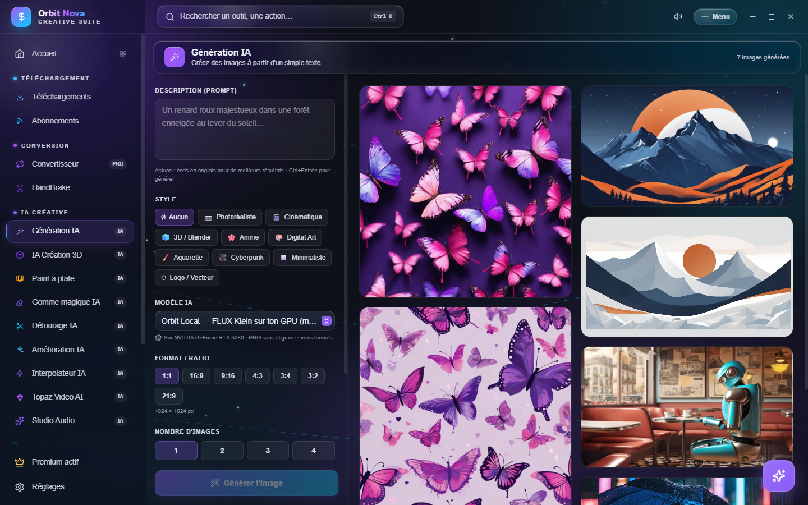
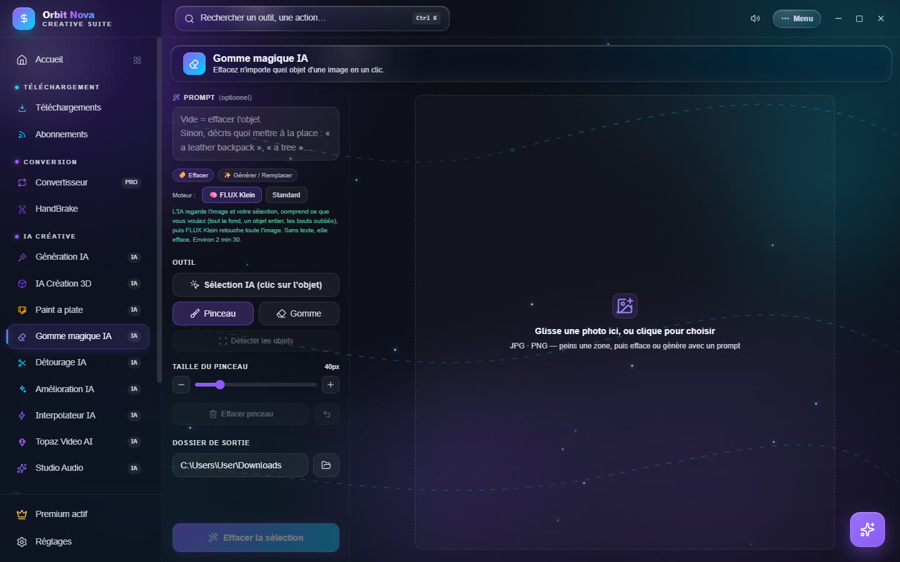
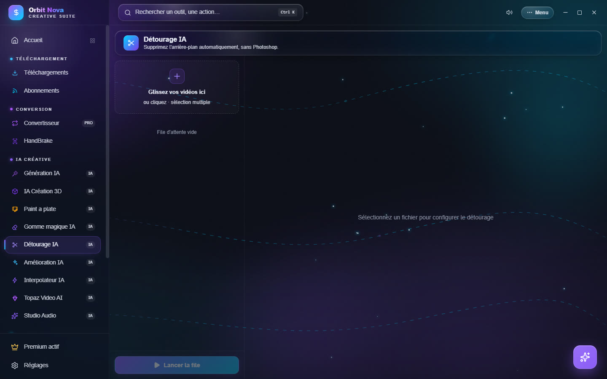
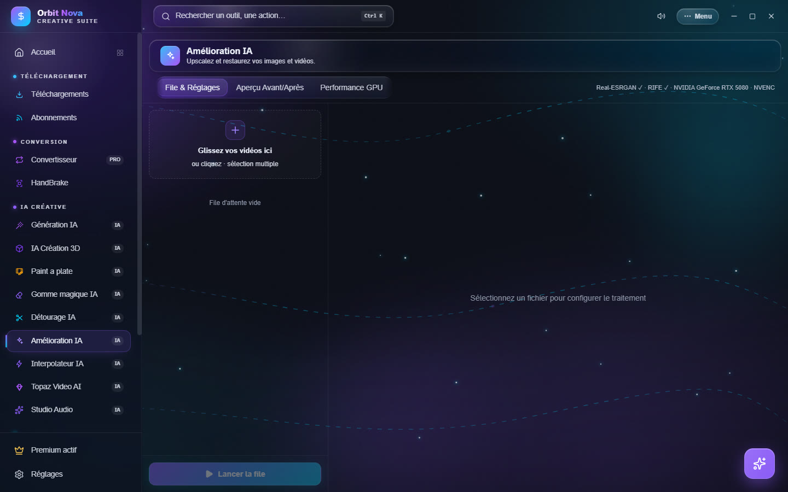

IA pour l'image
Ces quatre outils font partie d'Orbit Premium. Ils tournent sur votre ordinateur ; les modèles se téléchargent la première fois que vous en avez besoin.
Génération IA
Décrivez une image, Orbit la crée.


- Écrivez la Description (prompt) : ce que vous voulez voir, le style, la lumière. L'anglais donne souvent de meilleurs résultats ; Amélioration auto du prompt complète une description courte.
- Choisissez un Style : Aucun, Photoréaliste, Cinématique, 3D / Blender, Anime, Digital Art, Aquarelle, Cyberpunk, Minimaliste, Logo / Vecteur.
- Choisissez le Modèle IA :
- Orbit Local — FLUX Klein sur ton GPU : la meilleure compréhension des descriptions, sait écrire du texte lisible ; demande une carte NVIDIA et le moteur installé par Paint a plate ;
- Orbit Local — SDXL sur ton GPU : carte NVIDIA, environ 7 Go à télécharger la première fois ;
- Flux (service en ligne gratuit) : pour les PC sans carte NVIDIA ; ajoute un filigrane et limite la taille, une image toutes les 45 secondes environ.
- Réglez le Format / Ratio (1:1, 16:9, 9:16, 4:3, 3:4, 3:2, 21:9), le Nombre d'images (1 à 4) et la Seed : une seed fixe redonne la même image, pratique pour ajuster une description mot par mot.
- Cliquez Générer l'image (ou Ctrl+Entrée). Avec les moteurs locaux, l'image apparaît et se précise en direct pendant le calcul.
Chaque image de la galerie a ses boutons : ouvrir, ouvrir le dossier, Réutiliser prompt + seed, copier le prompt, voir les logs, supprimer. Ajouter à la file d'attente enchaîne plusieurs descriptions.
Gomme magique IA
Effacez un objet d'une photo, ou remplacez-le par autre chose, comme le remplissage génératif de Photoshop.


- Glissez une photo dans la zone (JPG, PNG, WEBP, TIFF, AVIF…).
- Sélectionnez la zone à modifier :
- Sélection IA (clic sur l'objet) : cliquez sur un objet, son contour est trouvé tout seul ; cliquez encore pour agrandir, Maj+clic ou clic droit pour retirer une partie ;
- Détecter les objets propose tous les objets trouvés dans la photo ;
- Pinceau et Gomme pour peindre ou corriger la zone à la main.
- Dans Prompt (optionnel) :
- laissez vide et cliquez Effacer : l'objet disparaît, le décor est reconstruit ;
- décrivez ce qu'il faut mettre à la place (« a leather backpack », « un arbre ») et cliquez Générer / Remplacer.
- Le résultat est enregistré dans le Dossier de sortie ; Annuler la dernière suppression revient en arrière.
Le Moteur se choisit au-dessus des outils :
- FLUX Klein : comprend toute la scène, travaille sur l'image entière jusqu'à 1920 pixels ; carte NVIDIA et moteur de Paint a plate. Utilisé pour remplacer (l'effacement passe toujours par LaMa, plus fiable) ;
- Standard : LaMa pour effacer, Stable Diffusion pour générer, avec trois niveaux : Rapide (PC modeste), Qualité (PC puissant) et SDXL HQ (carte NVIDIA, environ 6,5 Go la première fois).
Pour remplacer un fond, sélectionnez le fond, pas le personnage : seule la zone sélectionnée change.
Détourage IA
Retire l'arrière-plan d'une vidéo, sans fond vert.


- Glissez une ou plusieurs vidéos.
- Sélectionnez un fichier et réglez :
- Modèle & qualité : Rapide (512p), Équilibré (960p) ou Max (source) ;
- Arrière-plan : transparent (WebM VP9, ProRes 4444 ou Séquence PNG, prêts pour After Effects et Premiere), une couleur de fond, un flou ou une image de fond ;
- Affinage des bords : adoucir les contours, resserrer ou élargir le masque pour enlever un liseré.
- Aperçu (3s) montre le résultat sur 3 secondes (le damier = zones transparentes).
- Détourer, ou Appliquer à toute la file puis Lancer la file.
Amélioration IA
Agrandit, nettoie et stabilise vos vidéos et vos images.


Trois onglets : File & Réglages, Aperçu Avant/Après (comparez une image avant de lancer) et Performance GPU (charge et mémoire de la carte en direct).
Les réglages, par section :
- Upscale IA (Real-ESRGAN) : modèle, échelle ou résolution cible, taille des tuiles (plus petite si la carte a peu de mémoire), mode TTA (qualité maximale, plus lent) ;
- Restauration vidéo : débruitage (classique et temporel), récupération de la compression, anti-banding, récupération de détail, désentrelacement, luminosité, contraste, saturation, gamma ;
- Stabilisation en deux passes, avec lissage, sensibilité et zoom automatique pour masquer les bords ;
- Interpolation d'images (RIFE) : images par seconde de sortie ou ralenti ;
- Netteté & Export : netteté sans artefacts, format et codec.
Enregistrez vos réglages comme préréglage, puis Lancer la file.